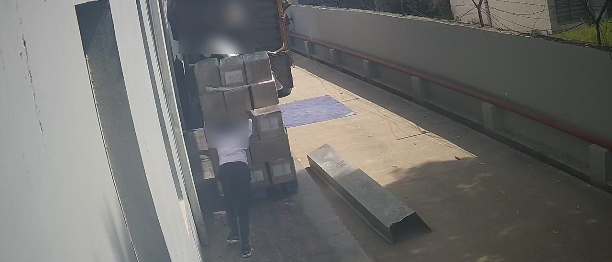
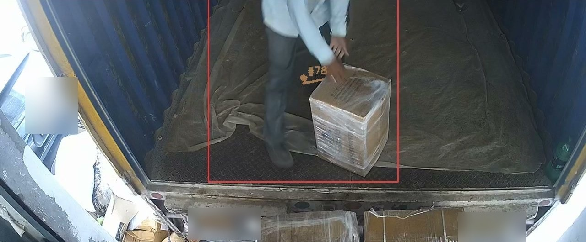
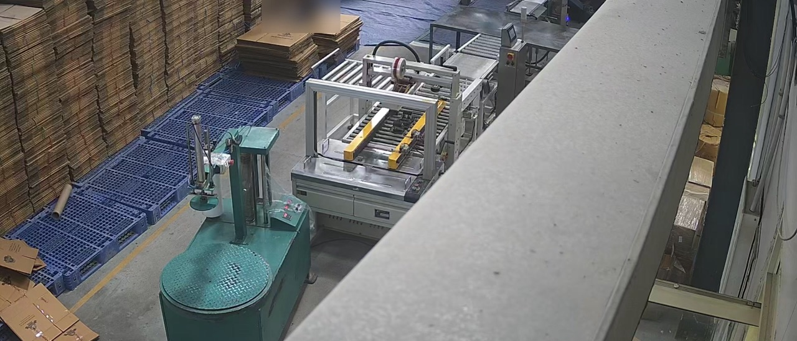

Healthfields counts cartons on the cameras it already had
Healthfields makes and sells organic staples, with more than 600 products. At its site in Greater Noida, VisorVolt counts what arrives and what leaves on the existing CCTV cameras, and writes the counts into the warehouse system. It all runs on one computer on site, with no internet needed.
102 counted against 103 by a person counting each carton, on a day the model never saw.
Exact on 7 of 7 hand-counted windows at the carton sealer, which handles about 450 items a day.
Share of truck arrivals the bay trigger caught. It was trained from about 40 frames.
Held-out means tested on days the models never saw. How we measured is below.
- Company
- Healthfields (Brahhm Arpan Organic Private Limited)
- Industry
- Food manufacturing and distribution
- Site
- Greater Noida, India
- Cameras
- Existing CCTV cameras
- Runs on
- One computer on site, no internet needed
- Results go to
- Their warehouse system
The challenge
Stock moves through many doors. Goods arrive by truck, finished goods are packed into cartons, and dispatch loads them onto trucks. Counting by hand is slow, and every count has to agree with the barcode scans and the registers.
Healthfields wanted counts it could trust, from the cameras it already owned, without sending its footage off site.
What we deployed
- Truck triggers. A camera spots a truck at the bay and starts the count. The trigger was trained from about 40 frames.
- Carton counter. A detector built from 40 labelled images, with a tracker, counts each carton loaded at dispatch.
- Packing counter. Counts every carton that passes the sealer on the packing line.
- Into the warehouse system. Counts are written into the warehouse system. Mismatches go to review with the video clip, and camera counts and barcode scans are reconciled every day into one stock position.
Five services and four nightly reports run on one computer on site, and keep running with no internet.



What we measured
Every number here was measured on days the models never saw, against a person’s own count.
- Cartons, −1%. A person counted each carton loaded on a dispatch truck on a held-out day. The counter said 102; the person counted 103.
- Packing, 7/7. Exact on all 7 hand-counted windows at the carton sealer, which handles about 450 items a day.
- Truck arrivals, 1.00. The bay trigger caught every truck arrival in the test, from about 40 training frames.
Checks against the dispatch register are under way. We will add them to the log below as they finish.
Progress log
The deployment is live and changes every week. Newest first.
What we did Published this case study with the measurements so far.
What’s next Add the dispatch-register checks to this log as they finish.
What we did Tested the carton counter on a day it never saw.
What we measured 102 cartons counted against 103 by a person counting each one (−1%).
What’s next Check carton counts against the dispatch register, day by day.
What we did Truck-arrival trigger went live at the unloading dock, and the packing counter went live at the carton sealer. A person counted every carton on one dispatch truck, so the carton counter could be tested on a day it never saw.
What’s next Measure each counter against a person’s count.
Related
Count what moves through your site
40 images per site, and we pick the 40.
Start with 40 images →